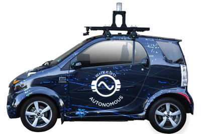
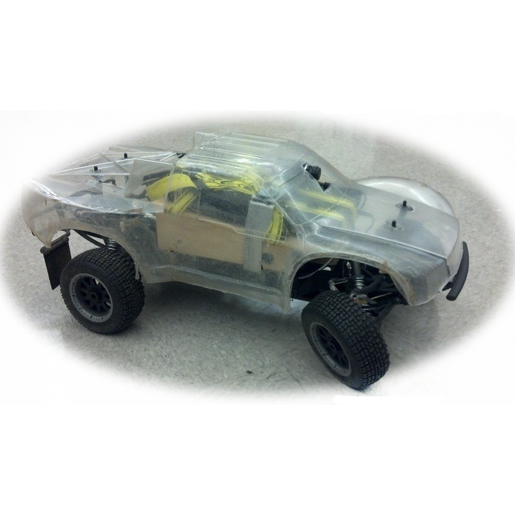
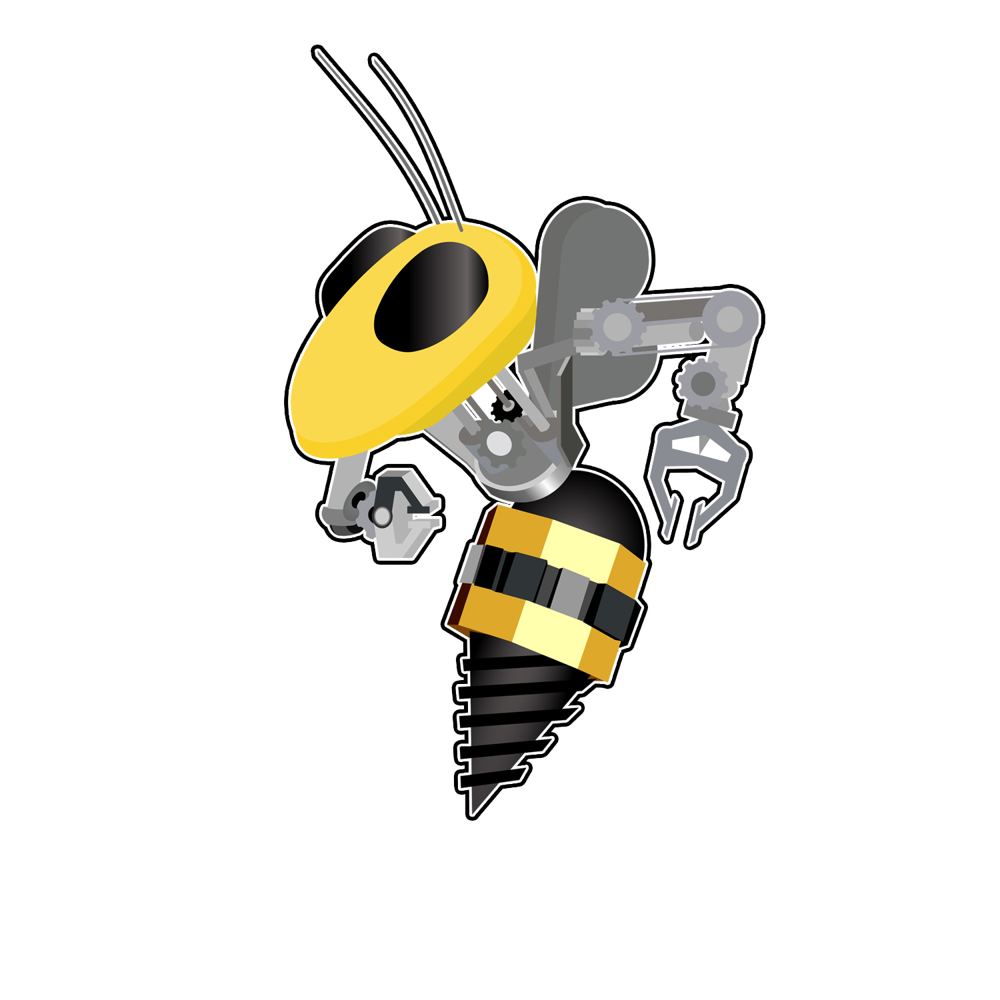
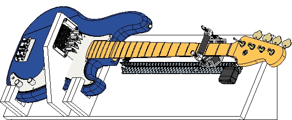
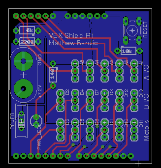
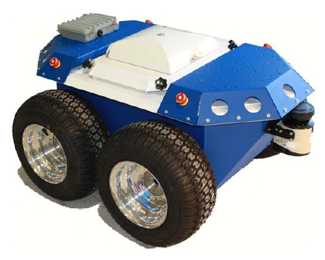
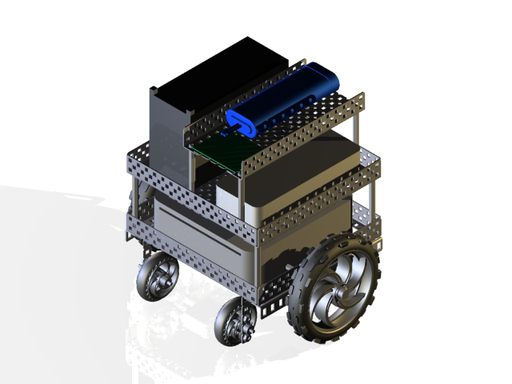
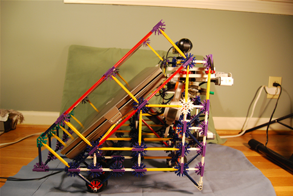

Atlanta-based startup building autonomous, electric cars. I'm a software engineer on the team building the autonomy systems.
wheego.net
Wheego Technologies
2017-2018Atlanta-based startup building autonomous, electric cars. I'm a software engineer on the team building the autonomy systems.
wheego.net

An RC-scale autonomous racecar from Georgia Tech's Wall Lab. Under the direction of Dr. Jim Rehg and Brian Goldfein, I worked on everything from hardware design to track perception.
autorally.github.io
AutoRally
2014-2017An RC-scale autonomous racecar from Georgia Tech's Wall Lab. Under the direction of Dr. Jim Rehg and Brian Goldfein, I worked on everything from hardware design to track perception.
autorally.github.io

I am a former president of RoboJackets and work on hardware and software for several of the competition teams.
www.robojackets.org
RoboJackets
2012-2018I am a former president of RoboJackets and work on hardware and software for several of the competition teams.
www.robojackets.org

As a final project for Georgia Tech's CS 7633, Human-Robot Interaction, I built a bass guitar-playing robot.
Project Page
BassBot
2016As a final project for Georgia Tech's CS 7633, Human-Robot Interaction, I built a bass guitar-playing robot.
Project Page

This is an Arduino shield I've designed for making it easier to interface with VEX electronics (servos, sensors, etc.) from an Arduino microcontroller.
Project page
VEX Shield for Arduino
2014This is an Arduino shield I've designed for making it easier to interface with VEX electronics (servos, sensors, etc.) from an Arduino microcontroller.
Project page

This project is from my internship at GTRI ELSYS in 2012. The project uses a kinect to autonomously map and navigate its environment.
Project Page
Seekur Jr.
2012This project is from my internship at GTRI ELSYS in 2012. The project uses a kinect to autonomously map and navigate its environment.
Project Page

One of my early experiments in computer vision, this rover uses a webcam and on-board computer to chase balls and avoid crashes.
Project Page
SPOT
2010One of my early experiments in computer vision, this rover uses a webcam and on-board computer to chase balls and avoid crashes.
Project Page
Crowd Traffic
2011A mobile Android application that uses data from other app users to build a live map of traffic. Built during an internship at GSU's Sensorweb Research Laboratory.
Project Page.

This project was my first large-scale robotics project. It was a rather bulky and slow rover controlled via Skype. I entered into the GaETC tech fair in 2008, where it went on to win first in state.
Chat Rover 9000
2008This project was my first large-scale robotics project. It was a rather bulky and slow rover controlled via Skype. I entered into the GaETC tech fair in 2008, where it went on to win first in state.